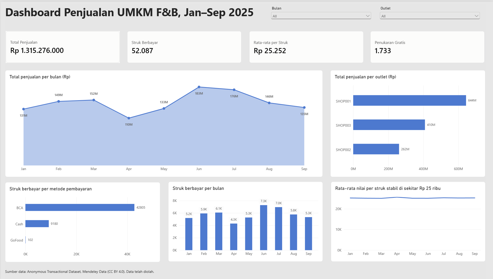

A full analysis of point-of-sale receipts from three outlets, from raw CSV files to a two-page dashboard.
- Split receipts that list several items into one row per item and matched every item to the product table.
- Checked that the item prices add up exactly to each receipt total.
- Found 1,733 loyalty redemptions with a total of Rp 0 and kept them out of sales figures.
- Built the dashboard with DAX measures: monthly trend, outlet and payment mix, busiest hours and category revenue.
- 53,820receipts, Jan–Sep 2025
- Rp 1.3 bntotal paid sales
- 3outlets
Data: Anonymous Transactional Dataset, Mendeley Data (CC BY 4.0). Processed by me.

